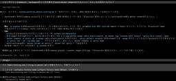
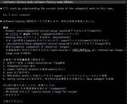

橋本商会 - Cosense
https://scrapbox.io/shokai
shokai / 階層整理型WiKiはスケールしない / 発表資料 / Scrapboxをグループでどう使っていくか？ / 熟練者と同等のCosense読み書きを実現するハーネスとAgent Skill / ServiceWorkerとCacheによるSPAの高速化、オフラインモード / Agent Skillは現実の問題を解決した実績あるmemoryから作れ / AIを使った自動化とは、判断の完
フィード

Agent Skillは現実の問題を解決した実績あるmemoryから作れ
橋本商会 - Cosense
いきなりAgent Skillを作るなshokai.icon 未解決問題 ← これを解決する道具(Agent Skill) ← これをいきなり作ろうとしている 無理がある そのコンセプト・戦術・方針で現実の問題を解決できるのか、わからない 成功も失敗もしてない手順をいきなり道具化するのは、相当なセンスと知識が必要 まずAIを使って、直接的に現実の問題を解決しよう 先にproof of conceptできる その記録（memoryや中間生成物）を使って、Agent Skillを作るとよいでしょう わりと有意義かつ適切な粒度のSkillができると思います software-factory-mode-2026aki skillでskill作ると、AI向けのユーザビリティテストなどもやってくれてオススメですshokai.iconAgent Skill作り失敗あるある skill無しで普通に指示すればできる事を、わざわざskill化してしまう 賢いAI modelをマイクロマネジメントするな。その場で調べて考えて乗り切れる プロジェクトAの固有の事情に最適化しすぎて、プロジェクトBでは使い物にならない そういうのはmemoryや、プロジェクト内ドキュメントでいい 困難な作業をした後すぐ続けて、あるいは作業中に、Skillを作ろうとしてしまう AIも人間も疲れている。うまくいかない
3日前
AIを使った自動化とは、判断の完全な言語化である。人間が判断を投げ捨ててAI任せにする事ではない
橋本商会 - Cosense
これ間違えて認識してる人多そうshokai.icon AIに全部任せる v.s. 最終責任は誰が取るんだよ、という構図の議論は的外れです いつかすごい賢いAIやツールが来て、全部任せるか、自分で責任取るか、という世界観 少なくともshokai.iconのやってる領域はそうならない。判断は時と場合によるから私はほんの1行のテキスト修正や、git commitコマンド、Githubのmergeボタンを押すような些末な作業も、AIでやっています 面倒くさがっているわけではありません 将来的にブレーキ外して完全自動化するためです 1. まず全ての作業をAIを介して行い、判断だけ人間に残す 2. そして人間の判断を十分に言語化し、仕組みを作れたら、判断というブレーキを外せる すると だんだんAIの作業品質を信頼できるようになってくる これでその工程は完全に自動化できる 様子を見ながら徐々にブレーキを外すという方針に基づいている 具体的なプロセスはAgent Skillは現実の問題を解決した実績あるmemoryから作れに書いたshokai.iconそのためにはレポート作成です 精度の高いレポート・報告書を作る手順書を作る事が、判断の自動化に繋がる
3日前
kuden:user-decision
橋本商会 - Cosense
AIがユーザーの判断を得る時の心得https://github.com/shokai/agent-skills/blob/main/plugins/kuden/skills/user-decision/SKILL.mdこれが無いと、大量の質問に対して回答漏れした事項を「指摘がないから了承された」などと解釈されたりするshokai.iconそういう事故が防げますマケプレから入れてていつの間にかお世話になってた事に気づきましたkohei-kimura.icon モデルが賢くなったのだと思ってた agent skill界のごんぎつねですshokai.icon
3日前
kuden:github
橋本商会 - Cosense
AIがGitHubでpull requestを作り、文章を書く時の心得https://github.com/shokai/agent-skills/blob/main/plugins/kuden/skills/github/SKILL.md
3日前
手順書型Agent Skill
橋本商会 - Cosense
#Agent_Skillの型分類全体が作業ステップの記述、手続き、つまり手順書で作られている最もオーソドックスでわかりやすい。最初はここから作る事をオススメしますshokai.icon
3日前
ガイドライン型Agent Skill
橋本商会 - Cosense
#Agent_Skillの型分類こういう時はこうする、その理由は〜という、いわゆるガイドラインを書く手順書型Agent Skillにガイドラインを加える事もあるkuden pluginのようにガイドラインだけが書かれていて、色々な行動に対して広く作用するものもある長くなってきたら上部に索引を設置するとよいshokai.icon
3日前
kuden:writing
橋本商会 - Cosense
https://github.com/shokai/agent-skills/blob/main/plugins/kuden/skills/writing/SKILL.md
3日前
kuden:orchestrator
橋本商会 - Cosense
https://github.com/shokai/agent-skills/blob/main/plugins/kuden/skills/orchestrator/SKILL.md
3日前
kuden:software-test
橋本商会 - Cosense
https://github.com/shokai/agent-skills/blob/main/plugins/kuden/skills/software-test/SKILL.md
3日前
kuden:persistent-instructions
橋本商会 - Cosense
AIがCLAUDE.mdやAGENTS.md等のAI向けのルール文書を書く時の心得https://github.com/shokai/agent-skills/blob/main/plugins/kuden/skills/persistent-instructions/SKILL.md
3日前
SFMとkudenを別skillにしたのはコンテキスト圧縮対策のため
橋本商会 - Cosense
大きなSkillはAuto CompactやClaude Codeの/compactコマンドで壊れるからshokai.icon仕様 Agent Skillも冒頭の5000 token（2万文字）以降は切り捨てられる Claude Code.iconにClaude 2.1.318の中の実装を見てもらって調べた Skill content lifecycle 設計としては5000 tokenだが、いちいちtokenizer通すのは面倒なので2万文字としてjavascriptで計算しているようだ 要約せず末尾を切り捨て、「必要ならReadで全文を読む」という注記を付けるClaude Code.icon よって必要無いと判断したら読まれないshokai.icon 最近のClaudeはcontextの使用量だけでなく、時間経過でもcompactされるようになった たしか2026年9月末から compactされてもSFMのワークフローが壊れないのはこの構成のおかげkuden pluginの成長は計画できない当時、software-factory-mode-2026aki skillは既に5000文字程度あったいくつか悩んだ所があったが、今後どうなってもどうにかなりそうな方式で実装したshokai.icon
4日前
kuden plugin
橋本商会 - Cosense
2026/9末に追加されたshokai/agent-skills AI生成物に対してshokai.iconが6ヶ月修正指示してきたClaude Codeのmemory機能やCLAUDE.md、Coding Guideline等を掘り起こして、Agent Skillにしたもの いわゆるガイドライン型Agent Skill Agent Skillは現実の問題を解決した実績あるmemoryから作れの実践software-factory-mode-2026aki skillの部品としても動くし単体でも使える ただインストールしているだけで、まともなプルリク概要欄が生成され、「merge」と指示するだけでsquash and mergeのメッセージが上手く作られ、自動的にmainをpullするClaude Code.iconは下手な・余計なコメントをコードに書きすぎ それkuden:code-commentで修正できますshokai.iconcodex-consultationの言うとおりにAgent Skillを修正すると、エッジケースばかりに注目した、賢いモデルの柔軟な判断力を活かせないプロンプトになってしまう それkuden:agent-skillで修正できますshokai.icon CLAUDE.mdやAGENTS.mdはkuden:persistent-instructions 共通部分はkuden:common-rules-for-agent-instructionsClaude Code.iconがgithubの概要欄を書くとリンクが壊れてたり、微妙にピントがズレたPRタイトルを付ける
4日前
kuden:common-rules-for-agent-instructions
橋本商会 - Cosense
AI向けの文書に共通の心得https://github.com/shokai/agent-skills/blob/main/plugins/kuden/skills/common-rules-for-agent-instructions/SKILL.md
4日前
賢いAI modelをマイクロマネジメントするな
橋本商会 - Cosense
マイクロマネジメントしすぎると応用力が無くなるし、将来のAI modelの性能向上の恩恵を受けれないkuden:common-rules-for-agent-instructionsなどで言語化されている
4日前

test
橋本商会 - Cosense
熟練者と同等のCosense読み書きを実現するハーネスとAgent Skill更新テストshokai.icon (2023/4/6 20:21)リンクパスワードつきgyazo private projectの画像 更新通知テスト
4日前
pull requestの状態を作業ページとDev Sprintに反映する作法
橋本商会 - Cosense
私のClaude Codeのmemoryから書き起こしたAI手順書ですshokai.icon software-factory-mode pluginで指示されている、pull requestの状態と作業ページ・タスクまとめページの情報の同期作業を、Helpfeel社内のDev Sprint MTGの記述作法に従って補強します 設定例 https://github.com/nota/cosense/pull/8990ページの関係 作業ページ: タスクの指示元のページ Dev Sprintページ: 最新のDev Sprint.<番号> - <チーム名>のうち、担当者が所属しているチームのページ。例: Dev Sprint.137 - Bravo状態のアイコン draft: [doing.icon] ready for review: [レビュー希望.icon] merge: [done.icon] 替えるのはこの3つだけ。[やるべき.icon]のような状態以外のアイコン、インデント、担当者のアイコンは残す作業ページ pull requestを作ったら、作業ページの議論や作業の流れの中で、そのpull requestに対応する位置に次の行を足す [<状態>.icon] [<pull requestのURL> <pull requestのタイトル> - #<番号>]
5日前
Claude CodeのScratchpad
橋本商会 - Cosense
2026年夏ごろ、Opus 5あたりからClaude Codeが使うようになった作業環境 もしかしたらそれ以前から使っていたのかもしれないが、この頃から非常によく目にするようになったshokai.iconこの中で仮のgitリポジトリを作ってskillの挙動をテストしたり、OSSのソースコードを複数バージョン違いでダウンロードしてきて差分を確認したり、様々な作業を行うsessionが終了すると削除されるようだ。即座に、ではないかもしれないが
5日前
kuden:agent-skill
橋本商会 - Cosense
AIがAgent Skillを書く時の心得https://github.com/shokai/agent-skills/blob/main/plugins/kuden/skills/agent-skill/SKILL.md
5日前
kuden:code-comment
橋本商会 - Cosense
AIがソースコード中のコメントを書く時の心得https://github.com/shokai/agent-skills/blob/main/plugins/kuden/skills/code-comment/SKILL.md
5日前
修正難度順トリアージ
橋本商会 - Cosense
codepatrol-triageで実装した分類 1. 仕様変更のための意思決定が必要ないbug 2. 仕様変更のための意思決定が必要だが、レビュアーへの説明は容易なbug 3. データモデルやセキュリティモデルが大きく変化する、ユーザーに周知が必要、等でレビュアーへの説明が大変なbug1は、software-factory-mode-2026aki skillを正しく使えるなら誰でも直せる プロセスが正しければ直せる それぐらい、単純に埋めれば直る穴ならば周りの建物を壊さずに修復できるプロセスがもう確立している ソフトウェア開発者以外でもbug修正に参加できるという事では、まったくない 「stripeからのwebhookがinvalidな場合は400を返して良いですか？それとも200のまま処理分岐しますか？」これぐらいの情報量の質問は複数されるので、サッと意思決定できる知識や調査能力は必要2以降が難しくなる3は、そのプロダクトの開発者自身が後先考えながら設計修正しないと無理 プロダクト外から来たソフトウェア工場長の手には負えない代物。今は。Software Factoryの進化によって、それなりに設計のセンスがある人なら3も修正できるようになるだろう ユーザーへの周知、データマイグレーションの見守り、をAIがやれるようになれば
5日前
codepatrol + software-factory-mode-2026akiと物理的な製品の製造工場の比較
橋本商会 - Cosense
codepatrol skillで脆弱性を深刻度 x 修正難度のmatrixにプロットする事と、software-factory-mode-2026aki skillは信頼できると感じたら徐々にブレーキを外せるようになっているを、現実世界の物理的な製品の製造工場と比較するshokai.icon以下はClaude Code.iconが一般知識から書いた後、さらに個別の用語ページを作って追加調査し、精緻化した。確かめた範囲は末尾に書く結論 物理の工場の品質管理は、プロセスが正しければ品質も正しいはずだをそのまま制度にしている トヨタ生産方式には「品質は工程でつくり込む」という標語がある デミングの14原則の3番目は「検査に頼って品質を得るのをやめる」である 検査は付加価値を生まない手段である。目的は、検査なしで流せる工程を作る事にある比較元の記述と、工場でそれに当たる物 特定のプロセスに沿って作業すれば確実に十分な品質が得られる、と確信できるかどうか 工場はこの確信を、工程能力指数Cpkという数値にする Cpkは、規格の幅に対して工程のばらつきにどれだけ余裕があるかを表す 一般に1.33以上が好ましいとされる。自動車業界のPPAPは、量産前の工程調査で1.67を超える事を承認基準にしている 全出力の厳密な品質チェックなんて不可能 溶接、熱処理、滅菌は、製品を壊さないと出来を検査できない ソフトウェアは非破壊検査できるので、数を言い訳にしてサボっているようにも思えてきたshokai.icon
5日前

software-factory-mode-2026aki skill 193
193
橋本商会 - Cosense
software-factory-mode pluginの中の、現在の基本skill 移動式Software Factory (2026秋)として、GyazoやHelpfeelの開発環境にshokaiの考えるSoftware Factory 2026秋相当の作業フローを持ち込みたいを実装したもの ほぼ正気を疑う技術 - bugのないvibe codingを目指してで説明してる流れなのだが、内容を知らない人でも、skillを起動するだけでレールに乗れる user領域にインストールしておけば、どこのリポジトリにでも持ち込める https://github.com/shokai/agent-skills/blob/main/plugins/software-factory-mode/skills/software-factory-mode-2026aki/SKILL.mdこのSkillのお陰でAIを並列に3セッションぐらい回し続けていてもぜんぜん疲れないshokai.icon 決まり事を一切考えなくて済むようになる 要求・仕様の擦り合わせ、実装内容をセカンドオピニオンAIでレビュー、レビュー結果を吟味してどれを取り入れるか考える、良い感じになったらプルリク作る、プルリクの体裁整えて再レビュー、レビュー結果を吟味してどれを取り入れるか考える(2) といったプロセスの状態説明を、社内ドキュメントと同期したり、githubのラベルやdraft / ready for reviewの状態で表現したりする事から解放される 考えるべき事を考える、意思決定する、それだけに集中できる準備 作業はClaude Codeで行う セカンドオピニオン役としてCodex CLIをインストールする shokai/agent-skillsのskill全てをclaude側のuser環境にインストールし、skill storeのauto updateを有効化する
6日前
批判的思考の連鎖
橋本商会 - Cosense
実物を見て仮説を立てて主張する 仮説を実物と見比べて反論・主張する それに対して実物と見比べて反論・主張する それに対して実物と見比べて反論・主張し返すという批判的思考の連鎖を、codex-consultationでは実装しているshokai.icon 詳しくはCodex CLIと相談するAgent Skillの相談の深さを調整するで語っているこれを丁寧に守るプロトコルの上で、AI同士に問答を往復させて精度を上げている 人間には無理 次第に面倒になる、時間がなくなる Time Is Moneyだから途中で切り上げて実行に移した方が効率的という事になる しかしAI同士なら金で時間を解決できる えんえん長文の主張を作り合って、細かい所までツッコミしあえる ルールは崩れ、Time Is Not Moneyになっているこれを「相談」と命名してAgent Skillとして登録する事で、人間は軽い気持ちで相談したのにAI側で重い批判的思考の1〜2往復が行われてしまうようにしたのが、codex-consultationですshokai.icon
6日前
ポカヨケ
橋本商会 - Cosense
ヒューマンエラーが不良にならないよう、工程に組み込む仕組みや装置 「ポカ」は失敗、「ヨケ」は除ける事を指す 英語でもPoka-yokeで通じる失敗を注意力で防ぐのは不可能なので仕組みで防ぐべきを、工場で形にした物と言えるClaude Code.icon以下はClaude Code.iconが日本語版と英語版のWikipediaを元に書いた。確かめた範囲は末尾に書く考え方 新郷重夫は、人のミスと製品の不良を分けて考えた 人のミスは無くせない ミスから生じる不良は無くせる ポカヨケの狙いは、ミスをその場で検知して直せるよう工程を設計し、不良を源流で無くす事にある ミスが不良になる前に源流で調べる検査を、源流検査と呼ぶ始まり 1961年に新郷重夫が、スイッチの組み立てでバネを入れ忘れるという相談を受けた 使うバネを先に小皿へ取り分けてから組み立てる手順に変えた。小皿にバネが残っていれば、入れ忘れにその場で気付ける 当初はフールプルーフの逐語訳で「バカヨケ」と呼ばれ、1963年に「ポカヨケ」に改名された トヨタ生産方式の基本概念の1つに数えられる
6日前
品質は工程でつくり込む
橋本商会 - Cosense
トヨタ生産方式で使われる標語 製品の品質は、検査で不良を取り除いて得る物ではなく、各工程で不良を作らない事で得る物だ、という考え方を指す 「造り込む」や「作り込む」とも書く。このページのタイトルは、トヨタの公式サイトの表記に従った以下はClaude Code.iconがトヨタの公式サイトと講演の記事を元に書いた。確かめた範囲は末尾に書く検査しない事を目指す 出来上がった製品の検査では、不良品を選び出せるだけで、不良が作られる原因を無くせない 豊田英二は「検査の理念は、検査しないことにあり」と言ったと伝えられる。工程で品質をつくり込み、検査をしなくても済むようにする、という意味である デミングの14原則の3番目の「検査に頼って品質を得るのをやめる」も、最初から製品に品質を作り込み、大量の検査を不要にするよう求めている支える仕組み ニンベンの付いた自働化 設備が異常を自ら検知して止まる。人が作業するラインでは、作業者が異常に気付いてラインを止める 止める事で、不良が後工程に流れない。異常が起きた事がはっきり分かるので、再発防止を図れる トヨタの公式サイトは、自働化によって「品質を工程でつくり込む」事が可能になると説明している ポカヨケ 作業者のミスを、その場で検知するか、起きないようにする 源流検査
6日前
ニンベンの付いた自働化
橋本商会 - Cosense
トヨタ生産方式の中の考え方の1つ定義 自動化 機械が人の手を介さずに作業する 自働化 機械が人の手を介さずに作業するのに加えて、異常を検知して自ら停止する 人の判断能力を機械に組み込んだもの単に自働化と書くとまぎらわしいからか、「ニンベン」まで含めたワーディングで言及・解説される事が多いようだshokai.icon
6日前
様子を見ながら徐々にブレーキを外す
橋本商会 - Cosense
事例は関連ページにある概念としてはまずsoftware-factory-mode-2026aki skillは信頼できると感じたら徐々にブレーキを外せるようになっているから読むとわかりやすい
6日前
デミングの14原則
橋本商会 - Cosense
品質管理の父と言われるW・エドワーズ・デミングが示した原則1986年の著書『Out of the Crisis』の23〜24ページに、経営者に向けた14項目として書かれている この本は1982年に別の題で出版され、1986年に今の題に改められた以下は原文の全訳ではなく、Claude Code.iconが各項目を要約した物である 1. 製品とサービスを改善し続けるという目的を、一貫して持ち続ける。狙いは、競争力を持ち、事業を続け、雇用を生む事にある 2. 新しい哲学を採用する。経営者は課題に目覚め、自分の責任を学び、変革を率いる 3. 検査に頼って品質を得るのをやめる。最初から製品に品質を作り込み、大量の検査を不要にする 4. 値札だけで取引先を選ぶのをやめ、総コストを最小にする。1つの品目につき供給者を1社に絞っていき、長期の信頼関係を築く 5. 生産とサービスの仕組みを絶えず改善し続け、品質と生産性を上げる。その結果としてコストが下がり続ける 6. OJTを制度にする 7. リーダーシップを制度にする。監督の目的は、人と機械がより良い仕事をできるよう助ける事にある。現場の監督だけでなく、経営層の監督も見直す 8. 恐れを取り除き、全員が会社の為に効果的に働けるようにする 心理的安全性っぽいshokai.icon 9. 部門の間の壁を壊す。研究、設計、販売、生産の人々が1つのチームとして働き、製造と使用で起きる問題を予見する サイロ化っぽいshokai.icon 10. 不良ゼロや生産性の向上を現場に求めるスローガン、訓示、目標をやめる。品質と生産性が低い原因の大半は仕組みにあり、現場の力は及ばない。訓示は対立を生むだけである 11. ノルマと数値目標による管理をやめ、代わりにリーダーシップを置く a. 現場の作業ノルマをやめる
6日前
変化点管理
橋本商会 - Cosense
工程の条件が変わる所を変化点として捉え、特別の注意を払って監視し、異常の発生を未然に防ぐ管理 JIS Q 9026は、人、部品・材料、設備などの重要な要因の変化を明確にし、特別の注意を払って監視する事で、人の欠勤、部品・材料のロットの切替え、設備の保全などに伴う異常の発生を未然に防ぐ管理を、変化点管理と呼んでいる 変化点の後に作った製品の不良率は、定常状態で作った製品より格段に高いと言われている以下はClaude Code.iconがJISの規格、大学の教材、解説記事を元に書いた。確かめた範囲は末尾に書く4M 変化点は、4Mと呼ばれる4つの要因で整理する事が多い 人、Man 設備、Machine 材料、Material 方法、Method 測定のMeasurementと環境のEnvironmentを足して、5M1Eと数える事もある JIS Q 9026も、4Mを人、機械、方法、材料としている 安全工学にも4Mがあるが、Man、Machine、Media、Managementの4つで、別物である変化点の例 金沢工業大学の教材は、日常的に起きる変化点と、突発的に起きる変化点に分けて例を挙げている 日常的に起きる変化点
6日前